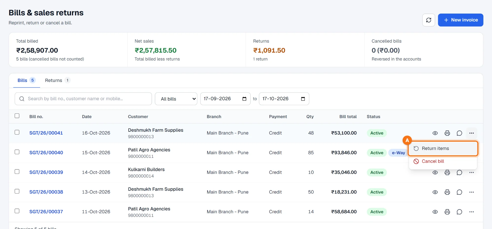
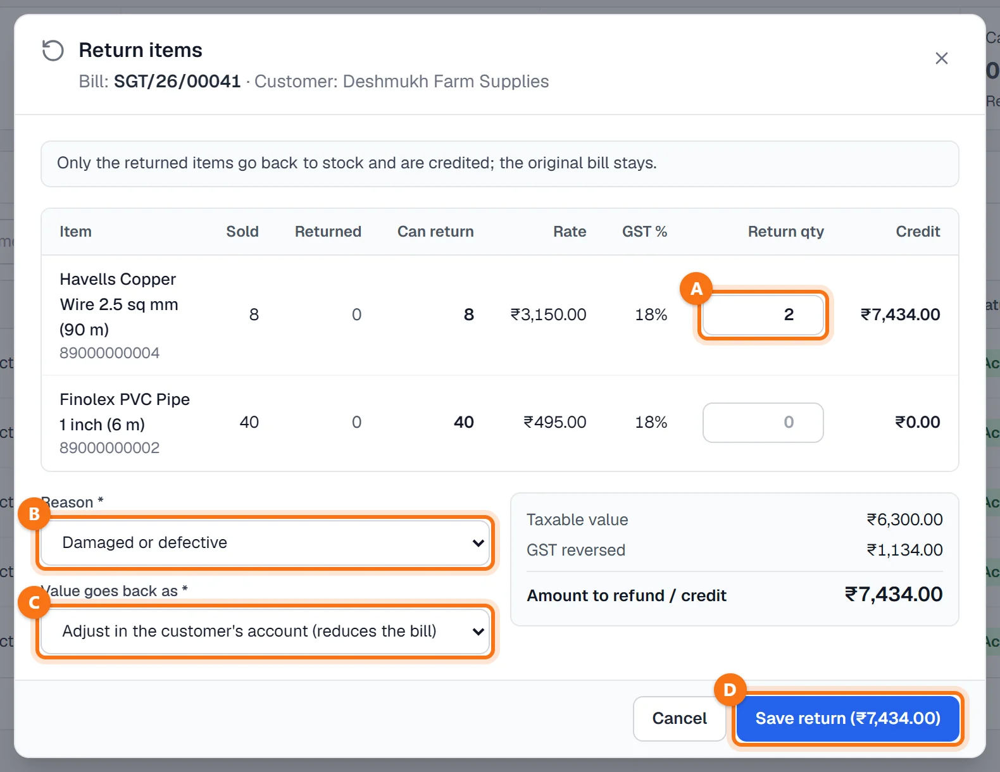
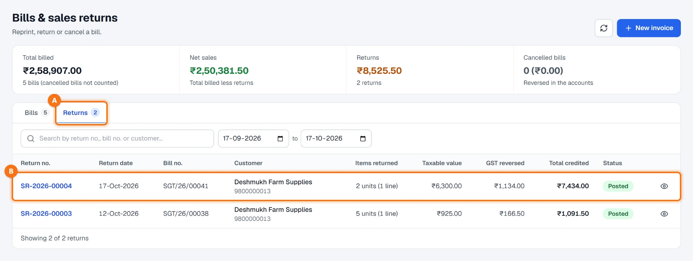
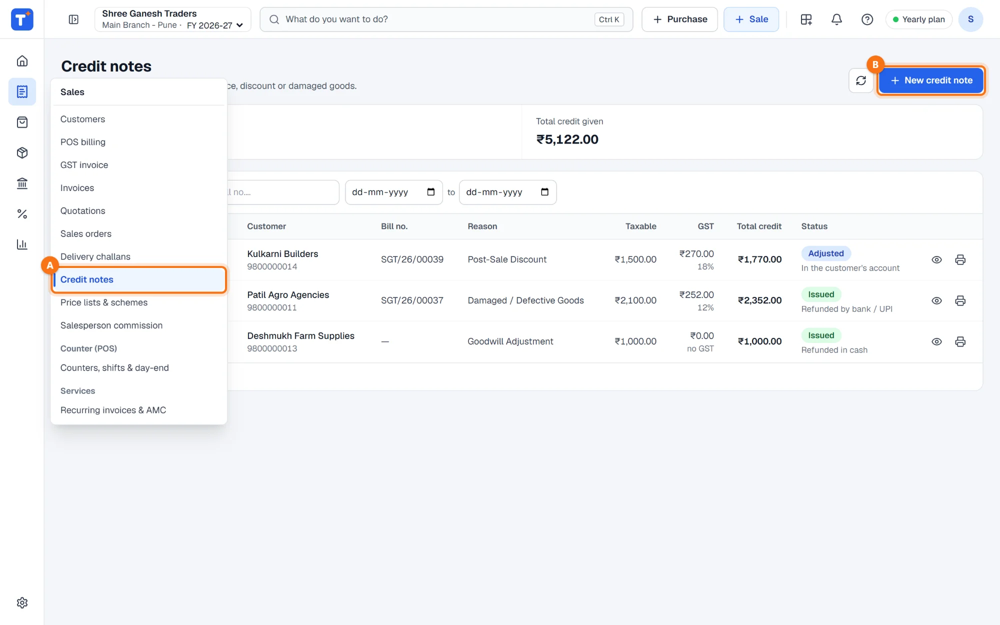
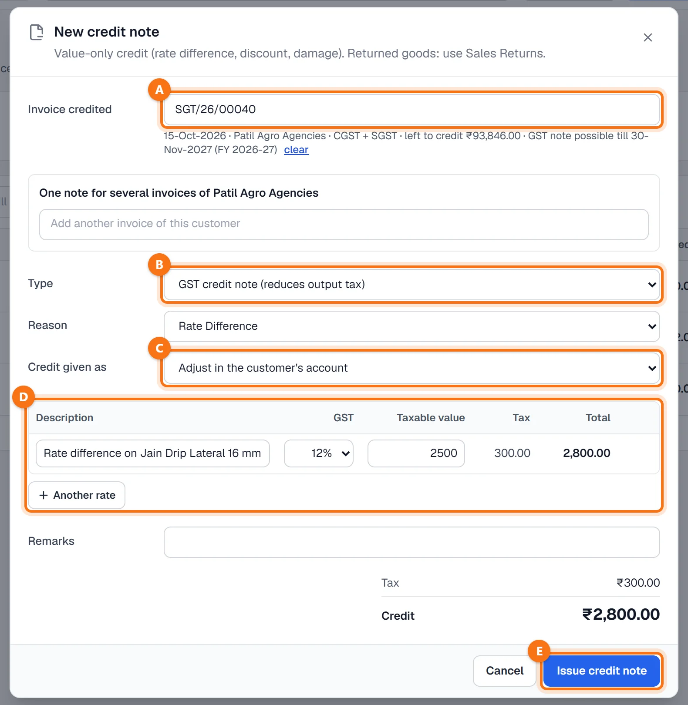
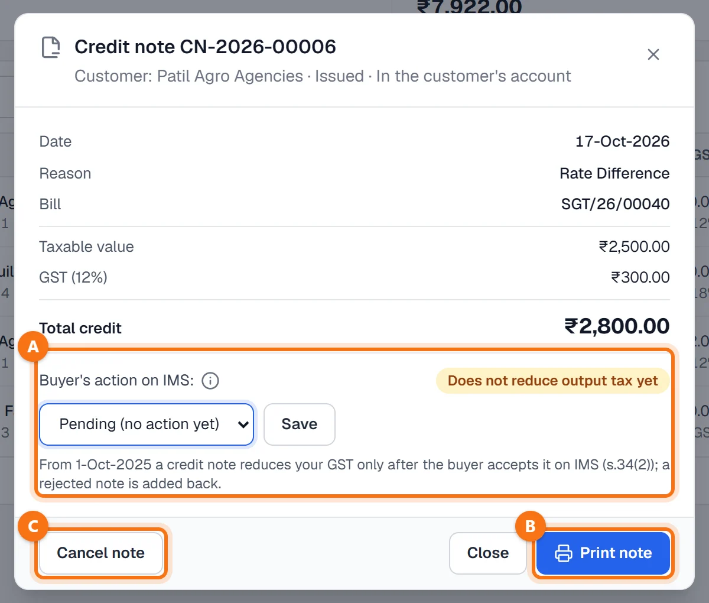

Techstar ERP हिंदी और मराठी में भी इस्तेमाल कर सकते हैं। ऊपर दाईं ओर अपने नाम के पहले अक्षर वाले गोल बटन पर click करें → Language (भाषा) → हिन्दी। ERP का menu हिंदी में दिखेगा (जैसे Sales = बिक्री)। बिल और दूसरे कानूनी दस्तावेज़ हमेशा की तरह छपते हैं। इस guide के screenshots English menu के हैं।
शुरू करने से पहले
माल वापस आया? सेल्स रिटर्न इस्तेमाल करें (स्टेप 1)। सिर्फ़ पैसे — रेट का फ़र्क, छूट, नुकसान, goodwill? क्रेडिट नोट इस्तेमाल करें (स्टेप 4)। क्रेडिट नोट की विंडो में ही लिखा है: Returned goods: use Sales Returns.
जो पूरा बिल बनना ही नहीं चाहिए था, उसे कैंसिल करें — देखें इनवॉइस खोजें, दोबारा प्रिंट करें या कैंसिल करें।
माल वापस आया: Return items
Sales → Invoices खोलें (हिंदी menu में: बिक्री → इनवॉइस सूची) और बिल खोजें। उसके ⋯ बटन पर click करें और Return items A चुनें। (बिल खोलने पर नीचे भी यही बटन होता है।)

मात्रा, कारण और रिफ़ंड
Return items विंडो में बिल की हर लाइन Sold, Returned (पहले की वापसी), Can return, रेट और GST % के साथ दिखती है। सिर्फ़ वापस आया माल स्टॉक में जाता है और उसकी क्रेडिट होती है; मूल बिल वैसा ही रहता है।
- Return qty A: कितने नग वापस आए (ज़्यादा से ज़्यादा जितने अभी वापस हो सकते हैं)। लाइन की क्रेडिट पास में दिखती है।
- Reason B: Damaged or defective, Extra quantity sent, Wrong item or size, Customer changed their mind या Failed quality check।
- Value goes back as C: Adjust in the customer's account (उधार बिल में बिल की रकम घटती है), Refund in cash या Refund by bank / UPI। ग्राहक master के ग्राहक के बिना walk-in बिल का सिर्फ़ रिफ़ंड हो सकता है, और उधार बिल का रिफ़ंड सिर्फ़ चुकाई गई रकम तक होता है।
दाईं ओर के बॉक्स में taxable value, उलटा गया GST और लौटाने / क्रेडिट करने की रकम दिखती है। Save return D पर click करें — बटन पर रकम दिखती है।

Returns टैब
वापसी को नंबर मिलता है (जैसे SR-2026-00004) और वह Returns टैब पर A B बिल नंबर, वापस आए आइटम, taxable value, उलटे गए GST और कुल क्रेडिट के साथ दिखती है। बिल पर अब Part returned या Fully returned दिखता है, और ऊपर के Returns व Net sales उसी के हिसाब से बदलते हैं।

वापसी save होने पर माल स्टॉक में वापस जाता है, बिक्री और उसका GST हिसाब में उलट दिया जाता है और — खाते में समायोजित हो तो — ग्राहक का बकाया घटता है। वापसी देखने के लिए उसके नंबर पर click करें: वह Return (credit note) के रूप में journal नंबर के साथ दिखती है।
माल वापस नहीं: Sales → Credit notes
बाईं ओर के menu में Sales → Credit notes A पर click करें (हिंदी menu में: बिक्री → क्रेडिट नोट), या Ctrl + F8 दबाएँ। हर नोट का नंबर, तारीख, ग्राहक, बिल नंबर, कारण, taxable value, GST, कुल क्रेडिट और status दिखता है — Issued, Adjusted या Cancelled, और क्रेडिट कैसे दी गई। New credit note B पर click करें।

क्रेडिट नोट बनाएँ
- Invoice credited A: इनवॉइस नंबर या ग्राहक से खोजें। नीचे की लाइन में इनवॉइस की तारीख, ग्राहक, CGST + SGST या IGST, अभी कितना left to credit और GST नोट किस तारीख तक बन सकता है, दिखता है। एक नोट में उसी ग्राहक के कई इनवॉइस ले सकते हैं: उन्हें जोड़ें और हर एक का हिस्सा दें (या Split the credit oldest first इस्तेमाल करें)।
- Type B: GST credit note (reduces output tax) — इसके लिए इनवॉइस चाहिए — या Commercial credit note (no GST)। इनवॉइस न हो या दिखाई गई आखिरी तारीख निकल गई हो तो सिर्फ़ commercial नोट बन सकता है; तब ग्राहक चुनें या walk-in नाम लिखें।
- Reason: Post-Sale Discount, Rate Difference, Damaged / Defective Goods, Goodwill Adjustment या Sales Return। बिक्री के बाद की छूट का GST नोट हो तो ERP पूछता है कि बिक्री से पहले किस करार या स्कीम के तहत छूट तय हुई थी, और उसकी तारीख।
- Credit given as C: Adjust in the customer's account, Refund in cash या Refund by bank / UPI।
- लाइनें D: विवरण, GST रेट (इनवॉइस के रेट), taxable value; टैक्स और कुल अपने आप गिने जाते हैं। दूसरे GST रेट के लिए Another rate से लाइन जोड़ें।
कुछ छूटा हो तो लाल सूची में दिखता है। Issue credit note E पर click करें। नोट को नंबर मिलता है (जैसे CN-2026-00006)।

प्रिंट, कैंसिल और ग्राहक का IMS एक्शन
नोट खोलने के लिए उसके नंबर पर click करें। Print note B से GST CREDIT NOTE (CGST कानून की धारा 34 के तहत) मूल इनवॉइस नंबर और ग्राहक के GSTIN के साथ छपता है।
GSTIN वाले ग्राहक के लिए Buyer's action on IMS बॉक्स A नोट के साथ होता है: 1-Oct-2025 से क्रेडिट नोट से आपका GST तभी घटता है जब ग्राहक उसे IMS पर (GST पोर्टल का Invoice Management System) accept करे। ग्राहक का एक्शन GST पोर्टल पर देखें और यहाँ दर्ज करें — Pending, Accepted, Deemed accepted या Rejected, तारीख के साथ — और Save पर click करें। तब बैज पर Reduces output tax या Does not reduce output tax yet दिखता है। ERP पोर्टल से जुड़ा नहीं है; पोर्टल पर जो दिखता है, वह आप दर्ज करते हैं।

Cancel note C (मालिक, admin, अकाउंटेंट या ब्रांच मैनेजर) कारण पूछता है। नोट का journal उसी की तारीख पर उलट दिया जाता है, इनवॉइस का बकाया और ग्राहक का खाता पहले जैसा हो जाता है, और नोट GST रजिस्टर से बाहर हो जाता है। उस महीने का GST रिटर्न भर देने के बाद यह नहीं हो सकता।
आम सवाल
सेल्स रिटर्न या क्रेडिट नोट — कौन-सा?
क्या बिना इनवॉइस के क्रेडिट दे सकते हैं?
GST credit note विकल्प फीका (बंद) क्यों है?
बिल का ई-इनवॉइस 24 घंटे से पुराना है। क्या अब भी कैंसिल कर सकते हैं?
क्या एक क्रेडिट नोट में कई इनवॉइस ले सकते हैं?
और guides
Screenshots Techstar ERP की demo कंपनी के हैं (Shree Ganesh Traders, Pune)। सभी नाम, GSTIN, रकम और दस्तावेज़ों के नंबर नमूना जानकारी हैं।